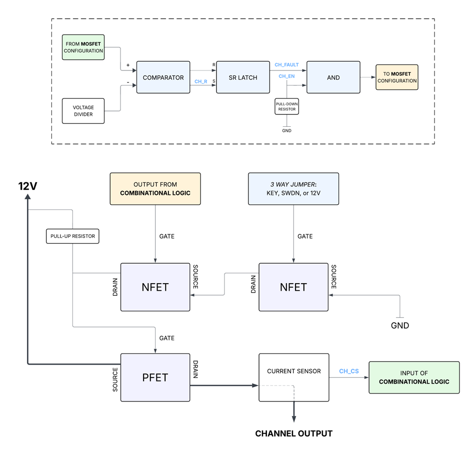

Smart PDM
Purpose
Smart Power Distribution Module (Smart PDM) is designed to manage and protect 12V power distribution within the car. It replaces traditional mechanical fuses and relays (Dumb PDM) with semiconductor-based switching and logic-driven fault detection. This is nice because it means faster response to electrical faults, improved reliability under comp-endurance-level conditions, and integration with vehicle communication systems (more fun stuff for software).
Core Details
The three main components of Smart PDM’s architecture is current sensing, digital logic, and semiconductor switching. Here is a block diagram of the entire process:

The light blue lettering are signals from the microcontroller
To put it simply, there is a PFET whose gate is controlled by NFETs. Those gates are controlled by thresholds (hardware and software). It’s a straightforward process. In the event of a short, it is conducted at the current sensor and then the combinational logic closes the PFET gate to stop 12V from going to the rest of the car. As a summary, you know that in general PDM’s main responsibility is to safely distribute 12V from the battery to everything. Dumb PDM does this with solid-state relays and fuses. Smart PDM does this through software detection (hence the smart).
Refer to extended documentation in 02 - Projects, and the files in the GitHub for more info.